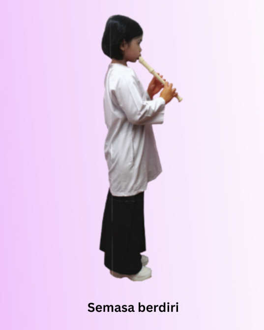
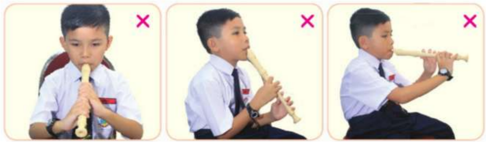

Postur
Postur semasa meniup rekoder ialah badan perlu tegak dan berada dalam keadaan selesa untuk memudahkan pergerakan tangan semasa penjarian.
Rekoder dipegang dengan kecondongan 45 darjah dari badan.
Perhatian
Poster badan tidak menegak dan terlalu membongkok.
Kedudukan rekoder yang tidak dalam kecondongan 45 darjah.
